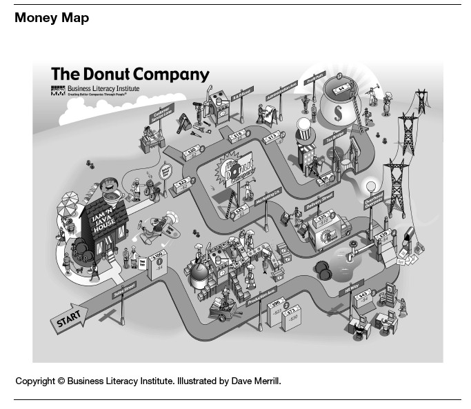

Financial Literacy Strategies
If your goal is to have a financially intelligent workplace or department, your first step is to figure out a strategy for getting there. We don’t use the word strategy lightly. You can’t just sponsor a one-time training course or hand out an instruction book and expect everyone to be enlightened. People need to be engaged in the learning. The material needs to be repeated, then revisited in different ways. Financial literacy needs to become part of a company’s culture. That takes time, effort, and even a little monetary investment.
But it’s very doable. In this chapter, we’ll offer some suggestions for both smaller companies and larger ones. You don’t need to limit yourself to just one category or the other, however. All the suggestions work in both contexts; the differences are often a matter of logistics and budgets. Large companies, for instance, are accustomed to producing formal training programs, while smaller companies may need to improvise. And a small company may not have much money to spend on training—although we believe that this is one of the few training programs that has a direct impact on the bottom line.
SMALL-COMPANY TOOLS AND TECHNIQUES
The following tools and techniques hardly constitute an exhaustive list. But they are all approaches that any manager or company owner can implement fairly easily on his or her own initiative.
Training (Over and Over)
Start by putting together three short, informal training sessions. We don’t mean anything fancy: even a PowerPoint presentation with some handouts works fine (though we would caution you that PowerPoint isn’t always conducive to lasting learning!). Each session should last between thirty and sixty minutes. Focus on one financial concept per session. Joe, for example, conducts three one-hour courses at Setpoint—on the income statement, on cash flow and project finance, and on the balance sheet. Depending on your situation, you might look at gross margin, selling expenses as a percent of sales, or even inventory turns. The concept should be relevant to your team’s job, and you should show people how they affect the numbers.
Offer these classes on a regular basis, maybe once a month. Let people attend two or three times if they want—it often takes that long for folks to get it. Encourage 100 percent attendance among your direct reports. Create an environment that tells the participants you believe they are an important part of the success of the company and that you want their involvement. Eventually, you can ask other people to teach the class—that’s a good way for them to learn the material, and their teaching styles might be different enough from yours that they’re able to reach people whom you can’t.
Weekly “Numbers” Meetings
What are the two or three numbers that measure your unit’s performance week after week and month after month? What are the two or three numbers that you yourself watch to know whether you’re doing a good job as a manager? Shipments? Sales? Hours billed? Performance to budget? Chances are, the key numbers that you watch relate in some way to your company’s financial statements and hence ultimately affect its results. So start sharing those numbers with your team in weekly meetings. Explain where the numbers come from, why they’re important, and how everybody on the team affects them. Track the trend lines over time.
You know what will happen? Pretty soon people will begin talking about the numbers themselves. They’ll start figuring out ways to move the needle in the right direction. Once that begins to occur, try taking it to the next level: forecast where the numbers will be in the coming month or quarter. You’d be amazed how people begin to take ownership of a number once they have staked their credibility on a forecast. (We’ve even seen companies where employees have set up a betting pool on where a given number will be at the end of a month or quarter!)
Reinforcements: Scoreboards and Other Visual Aids
It’s fashionable these days for corporate executives to have a “dashboard” on their computers, showing where the business’s performance indicators stand at any given moment. We always wonder why smaller companies and operating units don’t have the same thing out in the open for all employees to see. So we not only recommend discussing the key number or numbers in meetings, we also suggest posting them on a scoreboard and comparing past performance with present performance and future forecasts. When the numbers are out there for everybody to see, it’s tough for people to forget or ignore them. Remember, though, that small graphs can be easily ignored—and if they can be, they will be. As with your dashboard, make sure the scoreboard is clear, straightforward, and easily visible to all.
We also like visual aids that remind people how the company makes money. They provide a context for the day-to-day focus on key numbers. Our own company has developed what we call Money Maps, illustrating topics such as where profits come from. See the sample in figure 32-1: the map traces the entire business process at a fictional company, showing how much of each sales dollar goes to paying the expenses of each department, and then highlighting how much is left over as profit. We customize them for our clients, so that everyone can see all the operations in their companies. But you can even draw maps and diagrams yourself, if you know the material well enough. A visual is always a powerful tool for reinforcing learning. When people look at it, it reminds them how they fit into the big picture. It’s useful as well. One company we know of put up two copies of the same map. One showed the company’s target numbers—what its best branch was doing. On the other, managers wrote their own branch’s actual numbers. People could see for each critical element how close they were to, or how far away from, the best branch’s performance.
FIGURE 32-1

BUILDING FINANCIAL INTELLIGENCE IN LARGE COMPANIES
We’ve worked with dozens of Fortune 500 companies, helping them increase the level of financial intelligence in their organizations. Each of our clients seems to go about things differently, depending on its goals and its corporate culture. And of course many large companies rely on other outside trainers or create their own financial literacy programs. So we won’t try to specify too much. Instead we will draw on our own experience to describe the conditions and assumptions that seem to make this kind of training work best.
Leadership Support
The whole idea of increasing people’s financial intelligence is new to many large organizations, and we often encounter a significant number of skeptics or even detractors. (“Why should everyone understand finance—that’s what we have an accounting organization for, isn’t it?”) This is why a financial training initiative is likely to require support from the top. The stronger that support, the more likely it is that people throughout the organization will buy into the idea. Companies that experience the greatest impact from financial intelligence training, typically, are those where C-suite executives believe it is essential. Those companies educate people year after year, with some individuals taking the class every year as a refresher. Some even add new classes to advance their leaders’ and managers’ knowledge.
Support from the top also encourages others to contribute to the initiative. When we work with a client, for instance, we customize the content of what we teach to the client’s key concepts, measures, and financial results. To create that kind of program, we need help from people in various departments, but especially in finance. The financial folks are usually much happier about collaborating if they understand that the program has complete support at the top of the organization.
Assumptions and Follow-Up
One big obstacle to effective training is the assumption—common at many large companies—that people in responsible positions already know finance. A typical expression of this assumption might be, “Charlie has been a sales VP for so long, of course he knows how to read our financials.” We know from experience that the assumption is rarely true. Many managers and executives do their jobs well enough. But because they don’t truly understand financial measures and how their jobs affect those measures, they are operating well below their full potential. Think back to the twenty-one-question finance exam that we gave to a large sample of US managers. As we noted in chapter 3, the results indicated a remarkably low level of financial intelligence. So be careful not to assume that everyone understands. Assess first.
It’s also difficult to get people to admit that they don’t know finance. Nobody wants to look dumb in front of his or her peers, bosses, or direct reports. So there’s no point in asking people to raise their hands and volunteer for a class. Instead, we almost always include the foundational elements of finance in every class—notice we call it “foundational,” not “basic”—and our facilitator then assesses the needs of the group to determine where to start. Some companies require everyone to attend (so the question whether someone “needs” the training never arises); others hold classes that don’t cross levels, on the assumption that participants will feel more comfortable asking questions with no bosses or direct reports in the room.
Another issue that plagues many training initiatives is a lack of follow-up. Most large companies launch new programs frequently. Most also rotate their managers through a variety of positions. So there’s a danger that financial intelligence training gets lost. The best way to support ongoing financial intelligence in large organizations is to make sure that the conversation continues. Executives can talk about the numbers in meetings. If the company is public, they can ask employees to listen in on the quarterly earnings call, and then sponsor a post-call question-and-answer session. Leaders need to use every opportunity to let everyone know the importance of financial literacy.
The Practicalities
When a client asks for a training program, we naturally ask what the company wants to achieve, and what the needs of the training audience are likely to be. Then we home in on three practical questions:
• Whom do you want to attend?
• What content should we teach?
• How should we roll it out?
These discussions set the stage for successful planning and implementation of the program.
The who is sometimes determined in advance. For example, some clients integrate financial intelligence programs into their leadership or management development programs. But many clients start with one group, see how it goes, and then decide to roll it out to others. Some offer training at the highest level first, following up with sessions for midlevel managers and then for all employees. The logic is that the leaders can support the managers and the managers can support the rest of the organization. Others mix people from different levels in the same classes. That makes for good discussions, and it creates a feeling that everyone is in this together. The downside is that frontline employees may feel uncomfortable asking questions when their bosses are in the room with them. Still others roll out the program by function—HR first, then IT, and so on—while others simply allow open enrollment.
What to teach is obviously a critical decision, and the answer always depends on an individual company’s needs. Here are some key considerations:
• Don’t assume you can skip the foundation for any audience, even leaders. We always teach the foundational elements, just at a higher or lower level. It is a rare leader or manager who will actually tell you that he or she needs a review of these elements. By foundation, we mean such things as how to read an income statement and balance sheet, what revenue recognition means, and what the difference is between capitalizing and expensing.
• Integrate your key measures and concepts. This is an opportunity for the audience to learn what the CEO and CFO are talking about. Is free cash flow, EBITDA, or some other measure important in this industry and this company? If it is, then teach it. Review the definition, the elements, the formula, and the company’s own results.
• Determine the needs of the audience. If you are working with salespeople, you might want to examine their customers’ finances. That will help them learn how to assess customers’ needs from a financial perspective. If you’re working with HR people, you may want to focus on how HR has an impact on the financials (particularly since many HR people feel that they don’t make an impact at all).
In all these approaches, you have to remember a few key precepts that have to do with the way adults learn. Adults learn best when the instructors combine conceptual learning with calculations using real numbers, explain the meaning of the results, and lead discussions about their impact. We bet you’ll hear some amazing things, like new ideas for how to reduce downtime or improve cash flow. When people understand the big picture—and understand how what they’re learning connects to their job and their impact on the company results—they’ll pay close attention. Keep the teaching tightly focused, keep it fun—and remember, don’t try to make anyone into an accountant!
A Final Thought: The Issue of Sharing Information
Sharing financial information makes many people nervous, and with good reason. A public company cannot share nonpublic financial data without risking violation of the rules governing insider trading. The owners of private companies may feel that nobody other than the tax authorities has a right to see the data, just as nobody has a right to peer into their personal bank accounts. Here are some thoughts about this issue, based on our experience with a large number of clients.
Public companies publish a wealth of information in their annual and quarterly reports. In our classes, most of the data we use derives directly from the annual results found in the 10-K. But we also typically ask clients to share additional information with us so that the participants can learn what they need to—measures that aren’t shared publicly, for instance, or internal income statements that break down the data in helpful ways, or key concepts that are discussed internally but aren’t shared externally. We keep the materials confidential, and we discuss the importance of confidentiality with the participants. Sometimes company executives worry that competitors will get the information. But financial training rarely includes material that would benefit a competitor. How is a rival likely to gain from seeing the formula a company uses for ROTC?
The issue of what to share and how to share it is actually tougher in privately held companies. Some, of course, have no problem with sharing. For those that do have concerns, we often suggest sharing the information but collecting the handouts afterward, so that there is little chance of data leaking out. Occasionally, a client decides to alter the data in ways that accurately reflect trends and ratios while not revealing the real numbers. In this case, it’s important that trainees understand that the data has been camouflaged. The worst thing you can do is to make up information and pretend that it is real—it destroys trust.
Whatever your approach, don’t be afraid of experimentation. There’s a lot to gain from increasing the level of financial intelligence in your organization.